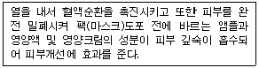
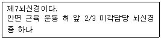
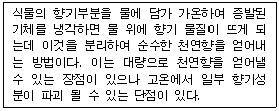
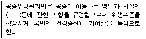

미용사(피부) (2009-03-29 기출문제)
1과목: 피부미용학
1. 물의 수압을 이용해 혈액순환을 촉진시켜 체내의 독소배출, 세포재생 등의 효과를 증진시킬 수 있는 건강증진 방법은?
- 아로마테라피(aroma-therapy)
- 스파테라피(spa-therapy)
- 스톤테라피(stone-therapy)
- 허벌테라피(hebal-therapy)
(정답률: 87%)

2. 글리콜산이나 젖산을 이용하여 각질층에 침투시키는 방법으로 각질세포의 응집력을 약화시키며 자연 탈피를 유도시키는 필링제는?
- phenol
- TCA
- AHA
- BP
(정답률: 94%)
3. 다음에서 설명하는 팩(마스크)의 재료는?

- 해초
- 석고
- 꿀
- 아로마
(정답률: 95%)
4. 클렌징의 목적과 가장 거리가 먼 것은?
- 청결과 위생
- 혈액순환 촉진
- 트리트먼트의 준비
- 유효성분 침투
(정답률: 57%)
5. 다음 중 필링의 대상이 아닌 것은?
- 모세혈관 확장피부
- 모공이 넓은 지성피부
- 일반 여드름피부
- 잔주름이 얇은 건성피부.
(정답률: 82%)
6. 피부 관리 시 마무리 동작에 대한 설명 중 틀린 것은?
- 장시간동안의 피부 관리로 인해 긴장된 근육의 이완을 도와 고객의 만족을 최대로 향상시킨다.
- 피부타입에 적당한 화장수로 피부결을 일정하게 한다.
- 피부타입에 적당한 앰플, 에센스, 아이크림, 자외선 차단제 등을 피부에 차례로 흡수시킨다.
- 딥클렌징제를 사용한 다음 화장수로만 가볍게 마무리 관리해주어야 자극을 최소화 할 수 있다.
(정답률: 73%)
7. 신체 부위별 관리의 효과를 극대화시키기 위한 방법과 가장 거리가 먼 것은?
- 배농을 돕기 위해 따뜻한 차를 마시게 한다.
- 온 타월을 사용하여 고객의 몸을 이완시켜준다.
- 시원한 물을 마시게 하여 고객을 안정시킨다.
- 편안한 환경을 만들어 고객이 심리적 안정감을 갖도록 한다.
(정답률: 90%)
8. 제모 관리에서 왁스 제모법의 장점이 아닌 것은?
- 신체의 광범위한 부위를 짧은 시간 내에 효과적으로 제거할 수 있다.
- 털을 닳게 하여 제거하는 방법이므로 통증이 적다.
- 다른 일시적 제모제보다 제모 효과가 4~5주 정도 오래 지속된다.
- 피부나 모낭 등에 화학적 해를 미치지 않는다.
(정답률: 74%)
9. 매뉴얼테크닉 시술 시 주의해야 할 사항이 아닌 것은?
- 피부미용사는 손의 온도를 따뜻하게 하여 고객이 차갑게 느끼지 않도록 한다.
- 처음과 마지막 동작은 주무르기 방법으로 부드럽게 시술한다.
- 동작마다 일정한 리듬을 유지하면서 정확한 속도를 지키도록 한다.
- 피부타입과 피부상태의 필요성에 따라 동작을 조절한다.
(정답률: 86%)
10. 제모시술 중 올바른 방법이 아닌 것은?
- 시술자의 손을 소독한다.
- 머절린(부직포)을 떼어낼 때 털이 자란 방향으로 떼어낸다.
- 스파츌라에 왁스를 묻힌 후 손목 안쪽에 온도테스트를 한다.
- 소독 후 시술부위에 남아 있을 유.수분을 정리하기 위하여 파우더를 사용한다.
(정답률: 81%)
11. 표피수분부족 피부의 특징이 아닌 것은?
- 연령에 관계없이 발생한다.
- 피부조직에 표피성 잔주름이 형성된다.
- 피부 당김이 진피(내부)에서 심하게 느껴진다.
- 피부조직이 별로 얇게 보이지 않는다.
(정답률: 46%)
12. 매뉴얼 테크닉의 기본 동작에 대한 설명으로 틀린 것은?
- 에플라쥐(effleyrage) - 손바닥을 이용해 부드럽게 쓰다듬는 동작
- 프릭션(friction) - 근육을 횡단하듯 반죽하는 동작
- 타포트먼트(tapotrment) - 손가락을 이용하여 두드리는 동작
- 바이브레이션(vibration) - 손 전체나 손가락에 힘을 주어 고른 진동을 주는 동작
(정답률: 70%)
13. 입술 화장을 제거하는 방법으로 가장 적합한 것은?
- 클렌저를 묻힌 화장솜으로 입술 바깥쪽에서 안쪽으로 닦아준다.
- 클렌저를 묻힌 화장솜으로 입술 안쪽에서 바깥쪽으로 닦아준다.
- 클렌저를 묻힌 면봉으로 닦아준다.
- 면봉으로 닦아준다.
(정답률: 74%)
14. 화장수의 작용이 아닌 것은?
- 피부에 남은 클렌징 잔여물 제거 작용
- 피부의 pH 밸런스 조절 작용
- 피부에 집중적인 영양공급 작용
- 피부 진정 또는 쿨링 작용
(정답률: 77%)
15. 팩 중 아줄렌 팩의 주된 효과는?
- 진정효과
- 탄력효과
- 향산화 작용효과
- 미백효과
(정답률: 62%)
16. 피부미용의 기능이 아닌 것은?
- 피부보호
- 피부문제 개선
- 피부질환 치료
- 심리적 안정
(정답률: 90%)
17. 피부미용의 관점에서 딥클렌징의 목적이 아닌 것은?
- 영양물질의 흡수를 용이하게 한다.
- 피지와 각질층의 일부를 제거한다.
- 피부유형에 따라 주 1~2회 정도 실시한다.
- 화학적 화상을 유발하여 피부세포 재생을 촉진한다.
(정답률: 85%)
18. 여드름 피부에 직접 사용하기에 가장 좋은 아로마는?
- 유칼립투스
- 로즈마리
- 페파민트
- 티트리
(정답률: 73%)
19. 피부구조에 대한 설명 중 틀린 것은?(문제오류로 실제 시험장에서는 나, 다 번이 정답처리 되었습니다. 여기서는 나번을 정답 처리 합니다.)
- 피부는 표피, 진피, 피하지방층의 3개 층으로 구성된다.
- 표피는 일반적으로 내측으로부터 기저층, 투명층, 유극층, 과립층 및 각질층의 5층으로 나뉜다.
- 멜라닌 세포는 표피의 유극층에 산재한다.
- 멜라닌 세포 수는 민족과 피부색에 관계없이 일정하다.
(정답률: 68%)
20. 사춘기 이후에 주로 분비가 되며, 모공을 통하여 분비되어 독특한 채취를 발생시키는 것은?
- 소한선
- 대한선
- 피지선
- 갑상선
(정답률: 77%)
2과목: 피부학 및 해부생리학
21. 피부 표피 중 가장 두꺼운 층은?
- 각질층
- 유극층
- 과립층
- 기저층
(정답률: 52%)
22. 각 비타민의 효능 설명 중 옳은 것은?
- 비타민 E - 아스코르빈산의 유도체로 사용되며 미백제로 이용된다.
- 비타민 A - 혈액순환 촉진과 피부 청정효과가 우수하다.
- 비타민 P - 바이오플라보노이드(bioflavonoid)라고도 하며 모세혈관을 강화하는 효과가 있다
- 비타민 B - 세포 및 결합조직의 조기노화를 예방한다.
(정답률: 56%)
23. 피부의 각질층에 존재하는 세포간지질 중 가장 많이 함유된 것은?
- 세라마이드(ceramide)
- 콜레스테롤(cholesterol)
- 스쿠알렌(squalene)
- 왁스(wax)
(정답률: 75%)
24. 콜라겐(collagen)에 대한 설명으로 틀린 것은?
- 노화된 피부에는 콜라겐 함량이 낮다
- 콜라겐이 부족하면 주름이 발생하기 쉽다.
- 콜라겐은 피부의 표피에 주로 존재한다.
- 콜라겐은 섬유아세포에서 생성된다.
(정답률: 67%)
25. 성인이 하루에 분비하는 피지의 양은?
- 약 1~2g
- 약 0.1~0.2g
- 약 3~5g
- 약 5~8g
(정답률: 70%)
26. 광노화의 반응과 가장 거리가 먼 것은?
- 거칠어짐
- 건조
- 과색소침착증
- 모세혈관 수축
(정답률: 81%)
27. 지성피부에 대한 설명 중 틀린 것은?
- 지성피부는 정상피부보다 피지분비량이 많다.
- 피부결이 섬세하지만 피부가 얇고 붉은색이 많다.
- 지성피부가 생기는 원인은 남성호르몬의 안드로겐(androgen)이나 여성호르몬인 프로게스테론(progesterone)의 기능이 활발해져서 생긴다.
- 지성피부의 관리는 피지제거 및 세정을 주목적으로 한다.
(정답률: 76%)
28. 혈액의 기능으로 틀린 것은?
- 호르몬 분비작용
- 노폐물 배설작용
- 산소와 이산화탄소의 운반작용
- 삼투압과 산, 염기 평형의 조절작용
(정답률: 44%)
29. 인체의 각 주요 호르몬의 기능 저하에 따라 나타나는 현상으로 틀린 것은?
- 부신피질자극호르몬(ACTH) : 갑상선 기능 저하
- 난포자극호르몬(FSH) : 불임
- 인슐린(Insulin) : 당뇨
- 에스트로겐(Estrogen) : 무월경
(정답률: 65%)
30. 세포 내에서 호흡생리를 담당하고 이화작용과 동화작용에 의해 에너지를 생산하는 곳은?
- 리소좀
- 염색체
- 소포체
- 미토콘드리아
(정답률: 68%)
3과목: 화장품학
31. 골과 골 사이의 충격을 흡수하는 결합조직은?
- 섬유
- 연골
- 관절
- 조직
(정답률: 84%)
32. 췌장에서 분비되는 단백질 분해효소는?
- 펩신(pepsin)
- 트립신(trypsin)
- 리파아제(lipase)
- 펩티디아제(peptidase)
(정답률: 67%)
33. 평활근에 대한 설명 중 틀린 것은?
- 근원섬유에는 가로무늬가 없다.
- 운동신경의 분포가 없는 대신 자율신경이 분포되어 있다.
- 수축은 서서히 그리고 느리게 지속된다.
- 신경을 절단하면 자동적으로 움직일 수 없다.
(정답률: 48%)
34. 다음 보기의 사항에 해당되는 신경은?

- 3차신경
- 설인신경
- 안면신경
- 부신경
(정답률: 67%)
35. 진동브러쉬(Frimator)의 효과가 아닌 것은?
- 앰플침투
- 클렌징
- 필링
- 딥클렌징
(정답률: 75%)
36. 전류의 설명으로 옳은 것은?
- 양(+)전자들이 양(+)극을 향해 흐르는 것이다.
- 음(-)전자들이 음(-)극을 향해 흐르는 것이다.
- 전자들이 전도체를 따라 한 방향으로 흐르는 것이다.
- 전자들이 양극(+)방향과 음극(-)방향을 번갈아 흐르는 것이다.
(정답률: 65%)
37. 디스인크러스테이션(disincrustation)을 가급적 피해야 할 피부유형은?
- 중성피부
- 지성피부
- 노화피부
- 건성피부
(정답률: 63%)
38. 적외선 미용기기를 사용할 때의 주의사항으로 옳은 것은?
- 램프와 고객과의 거리는 최대한 가까이한다.
- 자외선 적용 전 단계에 사용하지 않는다.
- 최대흡수 효과를 위해 해당부위와 램프가 직각이 되도록 한다.
- 간단한 금속류를 제외한 나머지 장신구는 허용되지 않는다.
(정답률: 52%)
39. 갈바닉 전류 중 음극(-)을 이용한 것으로 제품을 피부 으로 스며들게 하기 위해 사용하는 것은?
- 아나포레시스(anaphoresis)
- 에피더마브레이션(epidermabrassion)
- 카다포레시스(cataphoresis)
- 전기 마스크(electronis mask)
(정답률: 54%)
40. 증기연무기(Steamer)를 사용할 때 얻는 효과와 가장 거리가 먼 것은?
- 따뜻한 연무는 모공을 열어 각질제거를 돕는다.
- 혈관을 확장시켜 혈액 순환을 촉진시킨다.
- 세포의 신진대사를 증가시킨다.
- 마사지크림 위에 증기 연무를 사용하면 유효성분의 침투가 촉진된다.
(정답률: 67%)
4과목: 피부미용기기학
41. 기능성 화장품에 대한 설명으로 옳은 것은?
- 자외선에 의해 피부가 심하게 그을리거나 일광화상이 생기는 것을 지연해 준다.
- 피부 표면에 더러움이나 노폐물을 제거하여 피부를 청결하게 해 준다.
- 피부표면의 건조를 방지해주고 피부를 매끄럽게 한다.
- 비누세안에 의해 손상된 피부의 pH를 정상적인 태로 빨리 되돌아오게 한다.
(정답률: 60%)
42. 자외선 차단제에 대한 설명으로 옳은 것은?
- 일광의 노출 전에 바르는 것이 효과적이다.
- 피부 병변에 있는 부위에 사용하여도 무관하다
- 사용 후 시간이 경과하여도 다시 덧바르지 않는다.
- SPF지수가 높을수록 민감한 피부에 적합하다.
(정답률: 86%)
43. 다음 중 향수의 부향률이 높은 것부터 순서대로 나열된 것은?
- 퍼퓸 > 오데퍼퓸 > 오데코롱 > 오데토일렛
- 퍼퓸 > 오데토일렛 > 오데코롱 > 오데퍼퓸
- 퍼퓸 > 오데퍼퓸 > 오데토일렛 > 오데코롱
- 퍼퓸 > 오데코롱 > 오데퍼퓸 > 오데토일렛
(정답률: 78%)
44. 화장품의 4대 요건에 해당되지 않는 것은?
- 안전성
- 안정성
- 사용성
- 보호성
(정답률: 80%)
45. 다음의 설명에 해당되는 천연향의 추출방법은?

- 수증기 증류법
- 압착법
- 휘발성 용매 추출법
- 비휘발성 용매 추출법
(정답률: 80%)
46. 바디샴푸에 요구되는 기능과 가장 거리가 먼 것은?
- 피부 각질층 세포간지질 보호
- 부드럽고 치밀한 기포 부여
- 높은 기포 지속성 유지
- 강력한 세정성 부여
(정답률: 58%)
47. 세정작용과 기포형성작용이 우수하여 비누, 샴푸, 클렌징폼 등에 주로 사용되는 계면활성제는?
- 양이온성 계면활성제
- 음이온성 계면활성제
- 비이온성 계면활성제
- 양쪽성 계면활성제
(정답률: 57%)
48. 식중독에 관한 설명으로 옳은 것은?
- 세균성 식중독 중 치사율이 가장 낮은 것은 보톨리누스 식중독이다.
- 테트로도톡신은 감자에 다량 함유되어 있다.
- 식중독은 급격한 발생률, 지역과 무관한 동시에 발성의 특성이 있다.
- 식중독은 원인에 따라 세균성, 화학물질, 자연독, 곰팡이독으로 분류된다.
(정답률: 61%)
49. 보건행정의 제 원리에 관한 것으로 맞는 것은?
- 일반행정원리의 관리과정적 특성과 기획과정은 적용되지 않는다.
- 의사결정과정에서 미래를 예측하고 행동하기 전의 행동계획을 결정한다.
- 보건행정에서는 생태학이나 역학적 고찰이 필요 없다.
- 보건행정은 공중보건학에 기초한 과학적기 술이 필요하다.
(정답률: 81%)
50. 다음 중 같은 병원체에 의하여 발생하는 인수고통 전염병은?
- 천연두
- 콜레라
- 디프테리아
- 공수병
(정답률: 64%)
5과목: 공중위생학
51. 공중보건학의 개념과 가장 관계가 적은 것은?
- 지역주민의 수명 연장에 관한 연구
- 전염병 예방에 관한 연구
- 성인병 치료기술에 관한 연구
- 육체적 정신적 효율 증진에 관한 연구
(정답률: 66%)
52. 혈청이나 약제, 백신 등 열에 불안정한 액체의 멸균에 주로 이용되는 멸균법은?
- 초음파멸균법
- 방사선멸균법
- 초단파멸균법
- 여과멸균법
(정답률: 74%)
53. 석탄산의 90배 희석액과 어느 소독약의 180배 희석액이 같은 조건하에서 같은 소독효과가 있었다면 이 소독약의 석탄산 계수는?
- 0.50
- 0.⑤
- 2.00
- 20.0
(정답률: 78%)
54. 고압증기멸균기의 소독대상물로 적합하지 않은 것은?
- 금속성기구
- 의류
- 분말제품
- 약액
(정답률: 59%)
55. 멸균의 의미로 가장 적합한 표현은?
- 병원균의 발육, 증식억제 상태
- 체내에 침입하여 발육 증식하는 상태
- 세균의 독성만을 파괴한 상태
- 아포를 포함한 모든 균을 사멸시킨 무균상태
(정답률: 82%)
56. 이·미용사 영업자의 지위를 승계 받을 수 있는 자의 자격은?
- 자격증이 있는 자
- 면허를 소지한 자
- 보조원으로 있는 자
- 상속권이 있는 자
(정답률: 58%)
57. 미용업 영업자가 영업소 폐쇄 명령을 받고도 계속하여 영업을 하는 때에 시장, 군수, 구청장이 관계 공무원으로 하여금 당해 영업소를 폐쇄하기 위하여 조치를 하게 할 수 있는 사항에 해당되지 않는 것은?
- 출입자 검문 및 통제
- 영업소의 간판 기타 영업표지물의 제거
- 위법한 영업소임을 알리는 게시물 등의 부착
- 영업을 위하여 필수불가결한 기구 또는 시설물을 사용할 수 없게 하는 봉인
(정답률: 75%)
58. 공중위생관리법상() 속에 가장 적합한 것은?

- 위생
- 위생관리
- 위생과 소독
- 위생과 청결
(정답률: 68%)
59. 미용업자가 점빼기, 귓볼뚫기, 쌍커풀수술, 문신, 박피술 그 밖에 이와 유사한 의료행위를 하여 관련법규를 1차 위반했을 때의 행정처분은?
- 경고
- 영업정지 2월
- 영업장 폐쇄명령
- 면허취소
(정답률: 53%)
60. 과태료에 대한 설명 중 틀린 것은?
- 과태료는 관할 시장, 군수, 구청장이 부과 징수한다.
- 과태료처분에 불복이 있는 자는 그 처분을 고지 받은 날부터 30일 이내에 처분권자에게 이의를 제기할 수 있다.
- 기간 내에 이의를 제기하지 아니하고 과태료를 납부하지 아니한 때에는 지방세체납처분의 예에 의하여 과태료를 징수한다.
- 과태료에 대하여 이의제기가 있을 경우 청문을 실시한다.
(정답률: 59%)